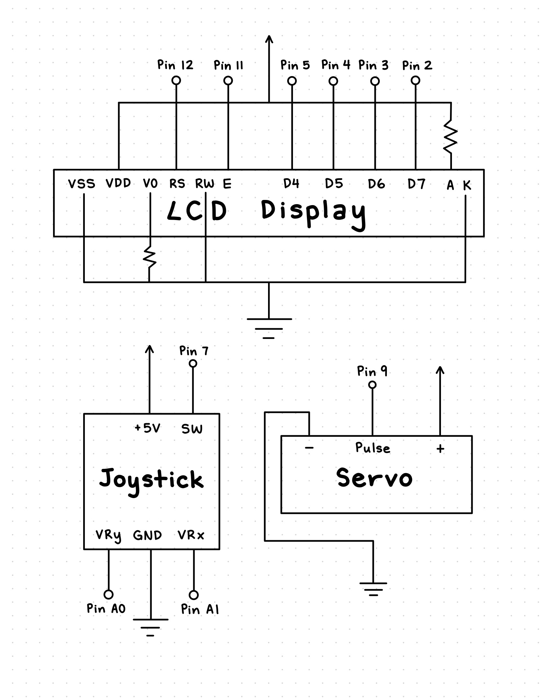
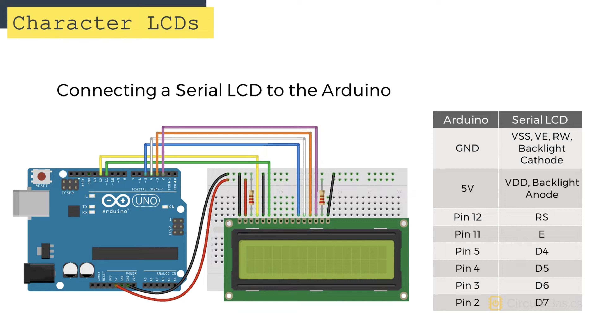
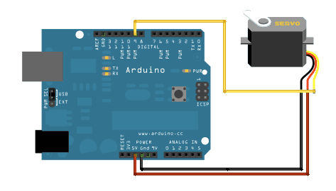
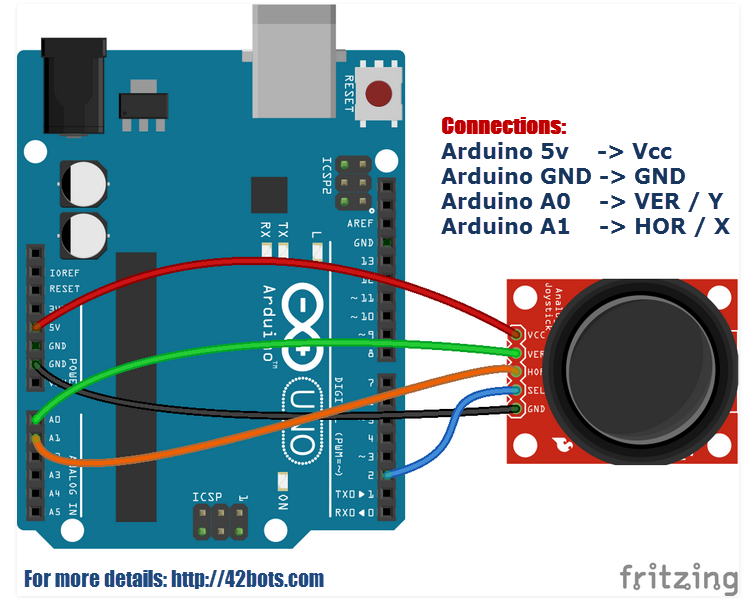
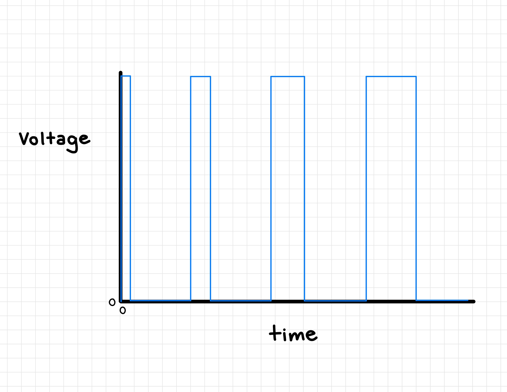

Assignment 4: Libraries!
Schematic and Circuit
This assignment required that our circuit use parts from the Arduino kit that would require a library (e.g. the remote control,
capacitive touch, or servo motor). The design must include both an input part (sensor, e.g. capacitive touch)
and an output part (actuator, e.g. servo), and it should either use multiple libraries or one library with multiple sensors.
To satisfy the assignment requirements, I chose to implement a joystick as an input part and the LCD display and servo motor as
an output part. I also used two libraries for the LCD display and servo.
My schematic
The schematic below shows all the parts used in my circuit.

My circuit
I started my circuit with the LCD display. Following
this tutorial, I first connected the LSD RS pin
to digital pin 12 and the LCD Enable pin to digital pin 11. Then, the LCD D4 pin was connected to digital pin 5, LCD D5 pin to digital pin 4,
LCD D6 pin to digital pin 3, and LCD D7 pin to digital pin 2. The VSS, RW, and K pins on the LCD were connected to ground, and VDD was
connected to 5V on the Arduino. Finally, I used two 1K resistors (as recommended by the tutorial) that connected the V0 and A pins to ground.

Next, I moved to the servo motor. I found an image of its setup in one of our lecture slides, and I connected my circuit accordingly. The
orange/yellow wire went to digital pin 9, the red wire to 5V, and the black wire to ground.

Finally, I added the joystick to my circuit using another picture of its setup from our lecture slides.
The joystick GND was connected to ground, and the +5V joystick pin connected to the 5V arduino pin. I also connected VRx to A0 and VRy to A1,
and since digital pin 9 was already being used by the servo, I had the joystick SW connect to the Arduino digital pin 7.

Below is a picture of my final circuit. It's a bit messy, but I supposed with all the wires and parts, it can't be avoided!

Code Snippet
You can download my full code as an Arduino file here!
/*
This sketch uses a LCD display, joystick, and servo motor to create a game of "Find the Hidden Smiley".
Push the joystick button to start the game. A blinking cursor will appear and can be moved around by
the joystick. The servo will point towards the direction of the hidden smiley. Push the joystick button
again to check your answer.
Library originally added 18 Apr 2008
by David A. Mellis
library modified 5 Jul 2009
by Limor Fried (http://www.ladyada.net)
example added 9 Jul 2009
by Tom Igoe
modified 22 Nov 2010
by Tom Igoe
modified 7 Nov 2016
by Arturo Guadalupi
modified 27 Oct 2025
by Katherine Kang
*/
// include the library code:
#include <LiquidCrystal.h>
#include <Servo.h>
// initialize the library by associating any needed LCD interface pin
// with the arduino pin number it is connected to:
const int rs = 12, en = 11, d4 = 5, d5 = 4, d6 = 3, d7 = 2;
LiquidCrystal lcd(rs, en, d4, d5, d6, d7);
// set up the pins connected to the joystick:
const int x = A0;
const int y = A1;
const int button = 7;
// create Servo object to control a servo:
Servo myservo;
// these constants won't change:
const int numRows = 2; // the number of rows on the LCD display
const int numCols = 16; // the number of columns on the LCD display
// these variables will change:
int xval = 0; // the x value of the joystick
int yval = 0; // the y value of the joystick
int cursorRow = 0; // the current row the curser is on
int cursorCol = 0; // the current column the curser is on
int smileyRow = 0; // the row that the hidden smiley is on
int smileyCol = 0; // the column that the hidden smiley is on
int pos = 0; // variable to store the servo position
bool playGame = false; // boolean that is true when the game is in progress
// make a custom smiley face character:
byte smiley[8] = {
0b00000,
0b00000,
0b01010,
0b00000,
0b00000,
0b10001,
0b01110,
0b00000
};
// make a custom frownie face character:
byte frownie[8] = {
0b00000,
0b00000,
0b01010,
0b00000,
0b00000,
0b00000,
0b01110,
0b10001
};
void setup() {
lcd.begin(numCols, numRows); // set up the LCD's number of columns and rows
lcd.createChar(0, smiley); // create the smiley character
lcd.createChar(1, frownie); // create the frownie character
myservo.attach(9); // attaches the servo on pin 9 to the Servo object
pinMode(x, INPUT); // takes the x value of the joystick as an input
pinMode(y, INPUT); // takes the y value of the joystick as an input
pinMode(button, INPUT_PULLUP); // takes the button state of the joystick as an input
Serial.begin(9600); // initializes the serial monitor
}
void loop() {
int buttonState = digitalRead(button); // reads the joystick button state (0 when pushed)
if (buttonState == 0) { // when the joystick button is pushed...
if (playGame == false) { // if the game is not in progress,
lcd.clear(); // clear the LCD display
lcd.setCursor(cursorRow, cursorCol); // set the cursor to its position before the clear
setSmiley(); // and set the hidden smiley at a random position.
} else if (playGame == true) { // if the game is in progress,
endGame(); // the game ends and checks the player's answer
}
playGame = !playGame; // toggle the gameStart boolean true/false
delay(1000); // wait a second
}
if (playGame == true) { // while the game is in progress,
lcd.blink(); // the cursor blinks at its current position.
xval = analogRead(x); // reads the x value of the joystick and saves it to xval
yval = analogRead(y); // reads the y value of the joystick and saves it to yval
if (xval == 0) { // if the joystick moves right,
if (cursorRow < 15) { // the cursor will move right one position if there is space
cursorRow++;
}
delay(250);
} else if (xval == 1023) { // if the joystick moves left,
if (cursorRow > 0) { // the cursor will move left one position if there is space
cursorRow--;
}
delay(250);
} else if (yval == 0) { // if the joystick moves up,
if (cursorCol > 0) { // the cursor will move up one position if there is space
cursorCol--;
}
delay(250);
} else if (yval == 1023) { // if the joystick moves down,
if (cursorCol < 1) { // the cursor will move down one position if there is space
cursorCol++;
}
delay(250);
}
lcd.setCursor(cursorRow, cursorCol); // sets the cursor to its current position
servoDirect(); // directs the servo to the position of the hidden smiley
}
}
// function that directs the servo to the position of the hidden smiley
void servoDirect() {
if (cursorRow < smileyRow) { // if the cursor is to the left of the smiley,
myservo.write(20); // the servo points right.
} else if (cursorRow > smileyRow) { // if the cursor is to the right of the smiley,
myservo.write(160); // the servo points left.
} else if (cursorCol != smileyCol) { // if the cursor is on the wrong row,
myservo.write(90); // the servo points down.
} else { // if the cursor has found the smiley,
for (pos = 70; pos <= 110; pos += 1) { // the servo goes from 80 degrees to 120 degrees...
myservo.write(pos);
xval = analogRead(x);
yval = analogRead(y);
delay(5);
}
for (pos = 110; pos >= 70; pos -= 1) { // and back from 120 degrees to 80 degrees!
myservo.write(pos);
xval = analogRead(x);
yval = analogRead(y);
delay(5);
}
}
}
// function that sets the hidden smiley at a random position on the LCD display
void setSmiley() {
smileyRow = random(0, 16);
smileyCol = random(0, 2);
}
// function that ends the game and checks the player's answer
void endGame() {
if (cursorRow == smileyRow && cursorCol == smileyCol) { // if the cursor matches the position of the hidden smiley,
lcd.write((byte)0); // write a smiley face.
} else { // if the answer is wrong,
lcd.setCursor(smileyRow, smileyCol); // moves the cursor to correct position
lcd.write((byte)1); // and writes a frownie face.
}
lcd.setCursor(cursorRow, cursorCol); // sets the cursor back to the answered position
}
Circuit Operation
The following gifs demonstrate how my final circuit operates. The first gif shows the player starting the game by pushing
the joystick button. This causes a blinking cursor to appear, and a hidden smiley is placed somewhere on the display. The servo
points towards the smiley, and the player can move the cursor using the joystick.
The second gif shows the player ultilizing the servo to direct the cursor to the hidden smiley. At first, the servo points to
the right, so the player moves to the right. The servo then points left, so the player moves back to the left.
When the servo is pointing up but remains still, this means the player is on the wrong row. The player moves down one row
and the servo starts sweeping left to right, signifing the player has found the hidden smiley. To check their answer, the player
pushes the joystick button, and the smiley is revealed.
The third gif shows what happens if the answer is wrong. The player pushes the joystick button while the servo is still pointing to
the right, and the smiley is turned into a frownie because the cursor wasn't at the right position. However, the player starts a
new game by pushing the joystick button again. This time, the smiley is successfully found!
Additional Questions
1. Say you are using a servo motor you attach to pin 9. In your loop() you have the following code:
void loop() {
for (pos = 0; pos <= 180; pos += 1) {
myservo.write(pos);
delay(100);
}
}
Draw a graph with the x-axis as time and the y-axis as voltage at pin 9 with respect to ground.

2: Your input device is slightly broken, leading it to give us an erroneous reading 1% of the time.
How can we address this? Answer in (pseudo)code.
I would address this issue by first seeing what the normal value range would be. Using Serial.print, I can monitor
the readings and see where the lowest and highest values should be. I can then use the constrain() method to make sure
all values will stay within this range.
3: Your input device is slightly noisy, leading the measurement to randomly deviate from the true
measurement up or down by 10%. How can we address this? Answer in (pseudo)code.
I would address this issue by grouping serveral readings together and taking the average reading as
the value used later in the code. For example, I could create a new variable called avgValue and store the average of the
past 10 readings or so into this varible. This would smooth the data and hopefully fix the noise.
4: Did you use AI tools in completing this assignment? If yes, please provide details on how/when, as well as a
brief reflection. If you used an LLM, please 'share' your conversation and include it as part of your submission, or cite the
prompt(s) you used and the output. If no, you can either leave this question blank, or provide other information if you'd like.
No, I did not use any AI tools for this assignment!